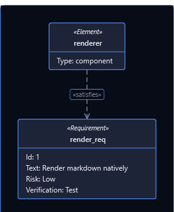
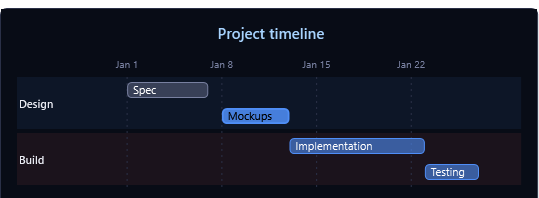
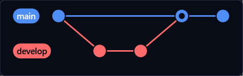
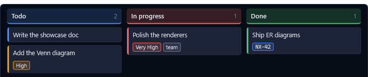
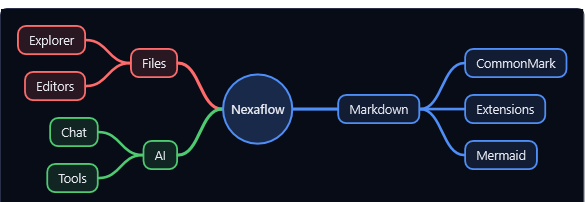
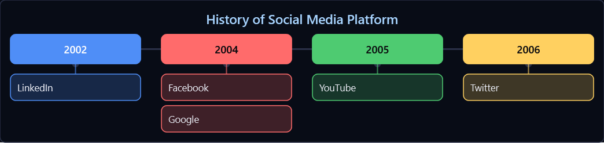
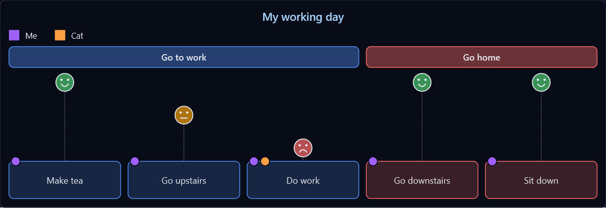

Requirement diagram
SysML-style requirements and elements with their satisfy / verify / derive relationships.
```mermaid
requirementDiagram
requirement render_req {
id: 1
text: Render markdown natively
risk: low
verifymethod: test
}
element renderer {
type: component
}
renderer - satisfies -> render_req
```

Gantt chart
Project schedules with sections, dependencies (after, until), task states (done / active / crit), milestones,
vertical markers and excluded days. Task and section names are typed into where they are drawn.
```mermaid
gantt
title Project timeline
dateFormat YYYY-MM-DD
excludes weekends
section Design
Spec :done, des1, 2024-01-01, 2024-01-07
Mockups :active, des2, 2024-01-08, 5d
section Build
Implementation :crit, b1, after des2, 10d
Testing : b2, after b1, 4d
Release :milestone, r1, after b2, 0d
Code freeze :vert, 2024-01-22, 1d
```

Git graph
Commit history across branches, with merges.
```mermaid
gitGraph
commit
branch develop
commit
commit
checkout main
merge develop
commit
```

Kanban board
Columns of cards with priority, assignee and ticket metadata — drawn as a real board.
```mermaid
kanban
Todo
[Write the showcase doc]
a[Add the Venn diagram]@{ priority: 'High' }
[In progress]
b[Polish the renderers]@{ assigned: 'team', priority: 'Very High' }
Done
c[Ship ER diagrams]@{ ticket: NX-42 }
```

Mindmap
Free-form hierarchies branching out from a central idea.
```mermaid
mindmap
root((Nexaflow))
Markdown
CommonMark
Extensions
Mermaid
Files
Explorer
Editors
AI
Chat
Tools
```

Timeline
Periods along a spine, each with its events stacked beneath; sections band the periods they group.
```mermaid
timeline
title History of Social Media Platform
2002 : LinkedIn
2004 : Facebook
: Google
2005 : YouTube
2006 : Twitter
```

User journey
Scored steps of a task: a face per score floats higher for a better experience, and each actor gets a colour.
```mermaid
journey
title My working day
section Go to work
Make tea: 5: Me
Go upstairs: 3: Me
Do work: 1: Me, Cat
section Go home
Go downstairs: 5: Me
Sit down: 5: Me
```
